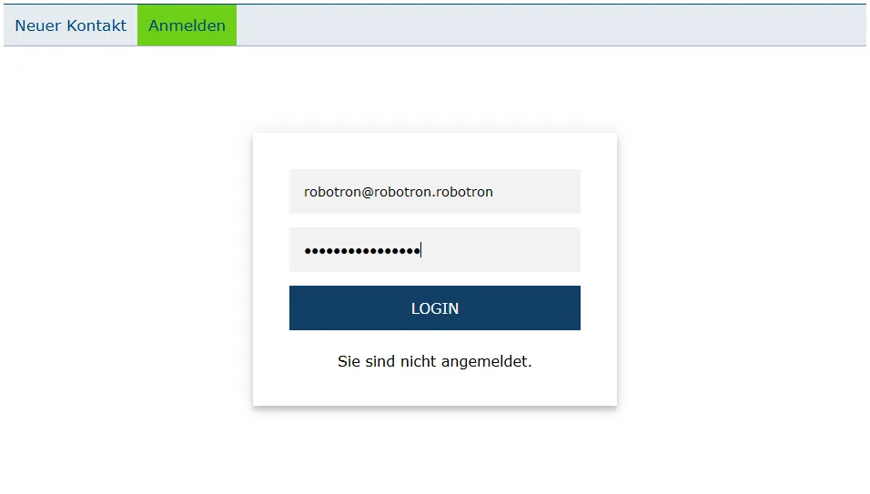

Unangemeldet kann ausschließlich das Kontaktformular "Neuer Kontakt" oder die "Anmelden"-Seite aufgerufen werden.
Sobald der User seine, vom Admin zugeteilten, Zugangsdaten eingibt, und auf Login klickt, wechselt er in den angemeldeten Zustand. Nun stehen ihm folgende Optionen zur Verfügung:
Über den Reiter Kontakte in der Navigationsleiste erreichbar. Es werden alle vorhandenen Datensätze angezeigt.
Suchfunktion:
z.B.
Über den Details-Eingabeknopf der Kontakte-Tabelle erreichbar. So lassen sich die gespeicherten Daten zu einem einzelnen Kontakt einsehen.
Über dieser Ansicht lässt sich der angezeigte Datensatz Löschen oder Bearbeiten, jeweils über den entsprechenden Eingabeknopf.
Es lassen sich die Datensätze als .csv und .xml Datei herunterladen. Der CSV bzw. XML-Eingabeknopf in der Kontakte Ansicht, generiert diese Tabelle und lädt sie im gewünschten Format herunter.